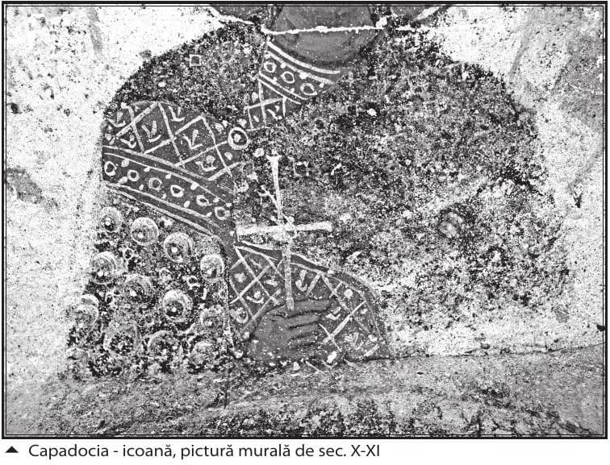
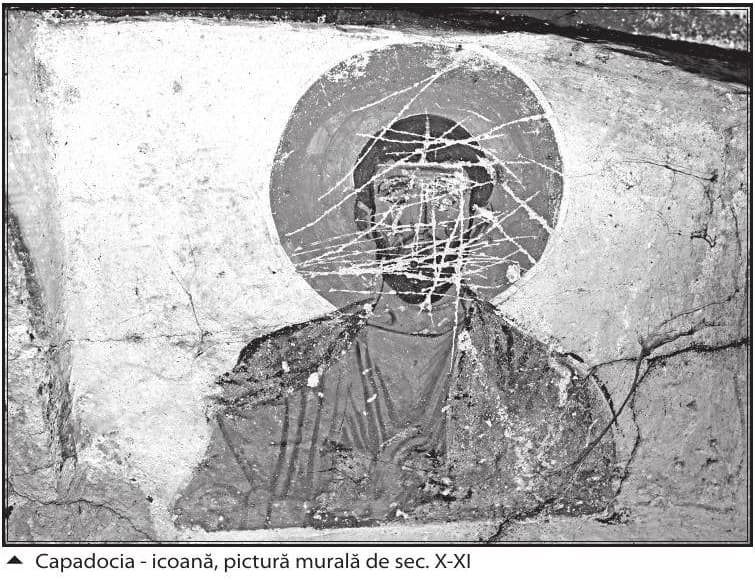

Potrivit învățăturii Sfinților Părinți, și binele și răul pe care-l facem noi, oamenii, se datorează felului cum lucrăm cu cele trei puteri ale sufletului nostru: rațiunea, pofta (sentimentul) și mânia (voința). Iată ce spune în acest sens Sfântul Isihie Sinaitul ale cărui scrieri le găsim în Filocalia IV:
„Suntem datori să mișcăm cele trei părți ale sufletului în chip cuvenit și potrivit cu firea, cum au fost zidite de Dumnezeu: mânia împotriva omului nostru din afară și a șarpelui satana. Mâniați-vă, zice, împotriva păcatului, adică mâniați-vă asupra voastră înșivă și a diavolului. Mâniați-vă ca să nu păcătuiți împotriva lui Dumnezeu. Pofta trebuie să o mișcăm spre Dumnezeu și fapta bună, iar rațiunea să o punem în fruntea acestora amândouă cu înțelepciune și cu știință spre a porunci, a sfătui, a pedepsi și a stăpâni cum stăpânește împăratul peste robi; și atunci rațiunea din noi le cârmuiește pe acestea după Dumnezeu. Iar dacă patimile se răscoală împotriva rațiunii și vor să o conducă, să punem rațiunea peste ele. Căci zice Iacov fratele Domnului: «Dacă nu greșește cineva în cuvânt, acela e bărbat desăvârșit, puternic să înfrâneze și întreg trupul…» (Iacov 3:2). Fiindcă, vorbind adevărat, toată nelegiuirea și păcatul se săvârșesc prin acestea trei, precum toată fapta bună și dreptatea se susțin iarăși prin acestea trei.”
Deci, ceea ce este foarte important să facem constă în a stăpîni mereu cu rațiunea noastră, pe care trebuie să o raportăm mereu la legea dumnezeiască, celelalte două puteri ale sufletului nostru: pofta (sentimentul, dorința) și mânia (voința). Și aceasta cu atât mai mult cu cât, dacă nu vom dezvolta mereu cu rațiunea noastră (sau, mai bine, zis cu mintea care cuprinde rațiunea) gânduri bune, nici pofta (sentimentul) și nici voința (mânia) nu cresc în intensitate. De aceea, Cuviosul Teodor al Edesei ne spune că avem datoria să lucrăm cu mintea: „Și, ca să rezumăm totul pe scurt, un singur lucru are de făcut sufletul rațional în trup: să se dorească a fi după scopul său propriu. Iar fiindcă lucrarea voinței fără înțelegere rămâne nemișcată, avem datoria să lucrăm cu mintea” (Filocalia IV). Căci totul depinde de gândurile pe care le dezvoltăm cu mintea noastră și, mai ales, de o necontenită dezvoltare a gândurilor bune, până ajungem să ne ridicăm mereu la gânduri tot mai generale în cunoașterea și activitatea noastră, o spun multi Sfinți Părinți.
Iată de pildă câteva citate din scrierile Sfântului Marcu Ascetul foarte grăitoare în acest sens: „Nu se înfiripă nor fără adiere de vânt și nu se naște patimă fără gând” (Filocalia 1). Sau: „Cel ce se războiește nu poate birui nici gândurile rele fără să biruiască pricinile lor, nici pricinile fără gânduri. Căci, când răpunem pe una în parte, nu peste mult suntem prinși, prin cealaltă, de către amândouă” (Filocalia 1) - în ultimul citat arătându-se limpede că nu pot fi biruite gândurile rele și nici pricinile lor (căci totdeauna trebuie să nu trecem cu vederea pricinile patimilor!) fără dezvoltarea de gânduri bune, bineînțeles. Mai mult decât atât, ca și la Sfântul Maxim Mărturisitorul, Sfântul Marcu Ascetul spune că răul sporește dacă noi continuăm să dezvoltăm gânduri rele: „Dacă ești nedreptățit și ți se înăsprește inima, nu te întrista, căci cu bun rost a fost pus în mișcare ceea ce ți s-a întâmplat. Ci, bucurându-te, alungă gândurile care răsar știind că, biruindu-le de la primul atac, va fi biruit împreună cu ele și răul după ce a fost pus în mișcare; dar, dacă gândurile continuă să se miște, și răul sporește” (Filocalia 1). La fel sporește binele pe măsura dezvoltării gândurilor bune, se înțelege.

De aceea, ca o concluzie foarte importantă a faptului că și sentimentele și voirile noastre își au începutul și se desfășoară pe măsura dezvoltării gândurilor noastre, Sfântul Marcu Ascetul zice: „Pricină a toată întâmplarea este gândul fiecăruia. Încă aș fi putut să zic că și cuvintele și faptele; dar, de vreme ce acestea nu ies înaintea gândului, pentru aceasta toate se cuvin puse pe seama gândurilor. Deci gândul, înainte-mergând, de aici și cuvintele și faptele ne dau nouă împărtășirea unuia față de altul” (Sfântul Marcu Ascetul, din Împotrivă-cuvântare cu un scholastic).
Sfinții Părinți spun adesea că în războiul nevăzut pe care îl avem de dus cu diavolii, totul depinde de măsura în care ne însușim sau nu gândurile pătimașe sau rele cu care aceștia caută să ne ispitească. Sfântul Isihie Sinaitul spune: „Toate păcatele bat mai întâi numai prin gânduri la ușa minții. Încât, dacă ar fi primite de cugetare, s-ar face apoi păcate simțite și groase. Dar pe toate le taie fapta bună cugetătoare a trezviei, nelăsându-le să intre în omul nostru lăuntric și să se prefacă în fapte rele. Iar aceasta o face prin înrâurirea și ajutorul Domnului nostru Iisus Hristos” (Filocalia IV).
Deci ne trebuie o necontenită trezvie a minții noastre unită cu rugăciunea continuă către Mântuitorul, pentru a putea învinge ispitele diavolilor ce ne vin în special prin gânduri rele. „Drept aceea - dacă vrei cu adevărat să acoperi cu rușine gândurile, și să te liniștești cu dulceață, și să păstrezi cu ușurință trezvia în inimă - să se lipească rugăciunea lui Iisus de răsuflarea ta și vei vedea cum se împlinește aceasta în puține zile” (Sfântul Isihie Sinaitul, Filocalia IV). Însă, odată cu trezvia minții și rugăciunea necurmată, trebuie să ne silim și să dezvoltăm cu mintea noastră mereu gânduri bune și tot mai ample, mai cuprinzătoare: vederile duhovnicești („contemplațiile”) de care vorbește adesea Sfântul Maxim Mărturisitorul și de care vom vorbi mai pe larg spre sfârșitul scrierii acesteia.
„[Diavolii], cei ce caută pururea sufletul nostru — zice Sfântul Maxim Mărturisitorul - îl caută prin cugetări pătimașe, ca să-l împingă la păcatul cu gândul sau la cel cu lucrul. Deci, când vor vedea că mintea nu-l primește, se vor rușina; iar când o vor găsi ocupată cu vederea duhovnicească, se vor întoarce și se vor rușina tare și degrabă” (Filocalia XI). Legat de aceasta, Cuviosul Ilie Ecdicul zice (tot în Filocalia IV): „Dracii războiesc sufletul mai ales prin gânduri, nu prin lucruri. Căci lucrurile în ele însele sunt necesare.” Explicând ideea de mai sus a Cuviosului Ilie Ecdicul, părintele Stăniloaie zice că: „Lucrurile în ele însele, fiind necesare nu sunt primejdioase sufletului decât când se adaugă la ele gândurile aduse de draci.”
Patimile au nevoie de obișnuința cu gândurile și cuvintele rele, însoțite de sentimente și voiri pe măsura lor, fiind mișcări iraționale ale acestor trei puteri ale sufletului nostru. De aceea, cele mai clare descrieri a ceea ce înseamnă patimile, precum și exemple concrete în ceea ce privește mecanismul desfășurării patimilor, ni le dă Sfântul Maxim Mărturisitorul. Iată ce zice acest mare sfânt părinte al Bisericii în citatele luate din Filocalia II:
„Patima este o mișcare a sufletului potrivnică firii fie spre o iubire nerațională, fie spre o ură fără judecata a vreunui lucru sau din pricina vreunui lucru din cele supuse simțurilor. De pildă, e o mișcare spre iubirea nerațională a mâncărurilor, ori a femeii, ori a avuției, ori a slavei trecătoare ori a altui lucru din cele supuse simțurilor sau din pricina acestora. Sau e o mișcare spre ura fără judecată a ceva din cele spuse mai înainte sau din pricina acestora.
Sau, iarăși, păcătoșenia este o judecată greșită cu privire la înțelesurile lucrurilor, căreia îi urmează reaua întrebuințare a lucrurilor (abuzul de lucruri). De pildă, când e vorba de femeie, judecata dreaptă cu privire la împreunare trebuie să vadă scopul ei în nașterea de prunci. Deci cel ce urmărește plăcerea greșește în judecată, socotind ceea ce nu e bine ca bine. Așadar, unul ca acesta face rea întrebuințare (abuzează) de femeie împreunându-se cu ea. Tot așa este cu celelalte lucruri și înțelesuri.”
Dacă am ști cât de importantă este paza minții noastre, am lua aminte la toate gândurile (ideile) ce ne trec prin minte spre a le dezvolta cum vrea Dumnezeu; pentru a nu fi siliți, după cum spune tot Sfântul Maxim Mărturisitorul, să ajungem la păcatul cu fapta, după ce l-am înfăptuit mai întâi cu gândul și cu imaginația: „Nu întrebuința rău ideile, ca să nu fii silit să întrebuințezi rău și lucrurile. Căci, de nu păcătuiește cineva mai întâi cu mintea, nu va păcătui nici cu lucrul!”
Din nefericire, aproape toți oamenii din zilele noastre reacționează sub impulsul sentimentelor, fără a vedea de ce fel de gânduri, bune sau rele, sunt însoțite acele sentimente. De aceea sunt rele cuvintele și faptele noastre, pentru că nu reacționăm mereu după ce ne-am cercetat sentimentele, văzând de la cine sunt insuflate: de la Dumnezeu sau vrăjmașii noștri diavoli. Și vom ști asta dacă vom avea grijă să lucrăm necontenit cu mintea spre a vedea mereu calitatea gândurilor cu care sunt însoțite sentimentele noastre. Trebuie să ne silim mereu ca, atunci când cercetăm gândurile ce ne vin în minte, să le dezvoltăm mereu așa cum vrea Dumnezeu. Sfântul Maxim Mărturisitorul revine adeseori asupra importanței faptului de a lucra necontenit cu mintea, tocmai pentru a nu fi conduși nici o clipă de sentimentele iraționale:
„Unii spun că răul n-ar fi în făpturi dacă n-ar fi vreo altă putere care ne atrage spre el. Iar aceasta nu e nimic altceva decât neîngrijirea de lucrările firești ale minții. Căci cei ce au grija de acestea fac cele bune, iar pe cele rele nu le fac niciodată. Deci, dacă vrei, alungă negrija și vei alunga totodată și păcatul. Căci păcatul este întrebuințarea greșită a ideilor, căreia îi urmează reaua întrebuințare a lucrurilor. Firesc este pentru partea rațională din noi să se supună rațiunii dumnezeiești și să stăpânească peste partea nerațională. Să se păzească așadar această rânduială în toate, și răul nu va mai fi în făptură, nici vreo putere care să atragă spre rău” (Filocalia II).
Însă nu vom putea face lucrul acesta dacă nu ne-am obișnuit din copilărie (sau măcar oricât de târziu în viața noastră) să ne hrănim mintea cu gânduri bune, care să ne facă să disprețuim gândurile rele și viața trupească, dusă în plăcere, pe care o aduc gândurile cele rele. De fapt, obișnuindu-ne cu gândurile cele bune, vom disprețui toate plăcerile născute din poftele (sentimentele) iraționale. Până când nu vom ajunge să agonisim tot mai multe gânduri cuprinzătoare despre lume, și semenii noștri și Dumnezeu, nu vom putea să disprețuim necontenit gândurile rele ale poftelor (sentimentelor) iraționale. „Cel ce s-a învrednicit de cunoștința lui Dumnezeu și se împărtășește de dulceața ei cu adevărat disprețuiește toate plăcerile născute din poftă. Iar cel ce poftește cele pământești, acela poftește ori mâncăruri, ori cele ce satisfac pe cele de sub pântece, ori slava omenească, ori bani ori altceva din cele ce urmează acestora. Și, dacă nu află ceva mai înalt decât acestea la care să-și mute pofta, mintea nu poate fi înduplecată să le disprețuiască pe acestea până la capăt. Dar mai bună decât acestea fără de asemănare este cunoștința lui Dumnezeu și a celor dumnezeiești” (Sfântul Maxim Mărturisitorul, în Filocalia II).
Însă trebuie să ne angajăm cu toate puterile sufletului nostru, iar nu numai cu rațiunea în mod abstract. Lucrarea celor trei puteri ale sufletului nostru se intercondiționează: nu pot exista sentimente adânci și voiri hotărâte, fără să aibă la bază gânduri adânci, generale, cuprinzătoare. Semnul neînșelător că lucrăm bine cu toate cele trei puteri ale sufletului — anume că rațiunea, luminată fiind de Dumnezeu, stăpânește peste sentiment și voință - îl avem în faptul că, (după cum zice părintele Stăniloae, comentându-l pe Sfântul Maxim Mărturisitorul) ne ridicăm la gânduri tot mai generale în cunoașterea și trăirea noastră. Dar să-l cităm iarăși pe Sfântul Maxim Mărturisitorul pentru a adeveri cele zise mai sus:
„Precum înțelesul simplu al lucrurilor omenești nu silește mintea să disprețuiască cele dumnezeiești, așa nici cunoștința simplă a celor dumnezeiesti nu o înduplecă deplin să disprețuiască cele omenești, deoarece adevărul se află acum în umbre și ghicituri. De aceea este nevoie de fericita pătimire a sfintei iubiri care leagă mintea de vederile (contemplațiile) duhovnicești și o înduplecă să prețuiască cele nemateriale mai mult decât pe cele materiale, și cele inteligibile și dumnezeiești mai mult decât pe cele supuse simțurilor” (Filocalia II).
Ceea ce e foarte important de reținut în ceea ce privește războiul duhovnicesc pe care îl avem de dus e faptul că mintea nu trebuie să stea nici o clipă fără a dezvolta gânduri bune. De aceea, într-o scolie pe marginea scrierilor Sfântului Maxim Mărturisitorul, se zice că: „Zăbovind gândul simplu, se stârnește patima; iar zăbovind cel pătimaș, se produce învoirea [cu patima]” (Filocalia II).
În urma perceperii lucrurilor și persoanelor prin cele 5 simțuri (și mai ales prin simțul văzului și al auzului), nouă ne intră în minte diverse gânduri. La început, gândurile intrate astfel în minte sunt simple, adică nedezvoltate în unele mai complexe. Noi le dezvoltăm după aceea fie în gânduri bune, care îmbogățesc mintea noastră, fie în gânduri rele care o îngustează și o sărăcesc. Ca să înțelegem mai bine lucrul acesta, folosim iarăși un citat din Sfântul Maxim Mărturisitorul:
„Unele dintre gânduri sunt simple, altele compuse. Simple sunt cele nepătimașe, iar compuse sunt cele pătimașe, ca unele ce constau din patimă și idee. Așa fiind, se pot vedea multe din cele simple urmând celor compuse, când încep să fe mișcate spre păcatul cu mintea. Să luăm de pildă aurul: în amintirea cuiva, s-a iscat gând pătimaș despre aur, iar acest fapt l-a dus cu mintea la furt și la săvârșirea păcatului în cuget. Amintirii aurului, i-a urmat deci îndată amintirea pungii, a lădiței, a vistieriei și cele următoare. Amintirea aurului era compusă, căci avea în ea patima. Dar a pungii, a lădiței și a celor următoare era simplă, căci mintea nu nutrea nici o patimă față de ele. La fel stau lucrurile cu gândul asupra a orice: cu slava deșartă, cu femeia și cu celelalte. Căci nu toate gândurile care urmează gândului pătimaș sunt și ele pătimașe, cum am arătat mai sus. Din acestea, putem cunoaște care sunt înțelesurile pătimașe și care cele simple.”

După Sfântul Maxim Mărturisitorul, tot războiul duhovnicesc - fie al monahilor, fie al mirenilor - se duce practic pentru a despărți gândurile rele de gândurile simple ce ne intră în suflet în urma perceperii lucrurilor prin simțuri. Pentru a alunga gândurile rele pe care diavolii vor să ni le lege de gândurile simple și pentru a dezvolta gândurile simple doar în gânduri bune tot mai complexe - încît a avea în suflet cu timpul doar dezvoltări de gânduri bune, ce nu mai permit intrarea gândurilor rele - părintele Stăniloae zicea, pe marginea scrierilor Sfântului Maxim Mărturisitorul, următoarele:
„Un gând odată ivit face să se nască după el și în legătură cu el un altul. Sau, cu alte cuvinte, se dezvoltă în altul. Deci nu trebuie să așteptăm ca un gând să se dezvolte în altul sau să apară după el dintr-o prelungire a cugetării, ci îndată să-l aducem lui Dumnezeu, adică să ne îndreptăm cugetul la Dumnezeu ca să punem acest gând în legătură cu El sau să-l avem pe Dumnezeu ca însoțitor în dezvoltarea mai departe a primului gând. Căci prezența lui Dumnezeu în cugetul nostru va opri dezvoltarea pe o pantă primejdioasă a gândului ivit. Desigur, aici e vorba de un gând bun. Căci gândul rău trebuie nimicit îndată, tot prin îndreptarea cugetului spre Dumnezeu. Păzirea aceasta a gândurilor de la prima lor apariție, pentru a fi aduse lui Dumnezeu când sunt bune sau pentru a fi alungate când sunt rele, trebuie să formeze împreună cu purtarea necazurilor și cu rugăciunea neîntreruptă slujba lăuntrică necontenită a omului evlavios, adică pocăința de toată viața. De observat că gândurile pot fi ținute curate numai când strădania aceasta e împreunată cu purtarea necazurilor. Acestea nu stau numai într-o alăturare întâmplătoare, ci într-o legătură necesară” (Filocalia I).
Trebuie să avem o grijă deosebită spre a ne însuși cât mai multe gânduri bune despre lucruri, persoane, pentru a ajunge în timp să dezvoltăm gânduri mai cuprinzătoare și a cunoaște mai bine gândurile dumnezeiești ce stau la baza întregii zidiri și în viața aceasta, dar mai ales în cea viitoare, după cum zice părintele Stăniloae:
„Cu cât cineva s-a deprins să cunoască în formă separată mai multe înțelesuri, cu atât va fi mai în măsură să le constate mai repede și mai deplin într-un cuvânt sau într-o rațiune cuprinzătoare. Astfel se arată importanța strădaniei omenești de-a cunoaște în viața de aici rațiunile cât mai multor lucruri și evenimente pentru a fi în stare să le vadă în mod unitar în Dumnezeu-Cuvântul și în viața eternă.”
Inima curată și duhul drept de care vorbește Psalmistul David în Psalmul 50 înseamnă, după Sfântul Maxim Mărturisitorul tocmai golirea minții de gândurile întinate și rele și umplerea ei prin har de gândurile cele bune dumnezeiești. Iar aici e bine să știm că la Sfinții Părinți, după cum zice părintele Stăniloae, termenii de „minte” și „inimă” (iar uneori chiar „duh”) sunt folosiți alternativ. După Sfinții Părinți, inima este un fel de centru al minții, iar mintea este centrul omului. Poate că ne-am folosi mai mult duhovnicește dacă peste tot (sau măcar unde se poate) am înlocui în scrierile Sfinților Părinți cuvintele „inimă” și „duh” cu „adîncul minții”. Dar să vedem mai jos citatul din Sfântul Maxim Mărturisitorul, care ne arată în ce constă adevărata bogăție a inimii curate și a duhului drept:
„Cel ce a luptat vitejește cu patimile trupului, și a războit cu tărie duhurile necurate și a alungat din ținutul sufletului său gândurile lor, [acela] să se roage să i se dea inimă curată și să i se înnoiască duh drept întru cele din lăuntru, adică să fie golit cu desăvârșire de gândurile întinate și să fie umplut prin har de gândurile dumnezeiești, ca să devină astfel în chip spiritual o lume a lui Dumnezeu, strălucită și mare alcătuită din vederi (contemplații) morale, naturale și teologice” (Filocalia II).
Tot timpul însă trebuie să avem în vedere că semnul sigur că dezvoltăm bine gândurile noastre stă, cum s-a mai spus, în ridicarea la gânduri tot mai generale și cuprinzătoare în cunoașterea și trăirea noastră. Când avem chiar gânduri bune - dar pe care nu ne silim să le dezvoltăm mereu până la măsura celor mai generale, mai cuprinzătoare - nu ne întărim prin aceasta celelalte două puteri ale suHetului nostru, adică sentimentul și voința. Sentimentele rele (poftele rele despre care aflăm în rugăciunile de dimineață și de seară1) sunt rod al unor gânduri fie rele, fie chiar bune, dar de care nu avem grijă să le dezvoltăm mereu până la a ajunge la gândurile mai generale, mai cuprinzătoare. Și de aceea, datorită influenței demonice, pot fi dezvoltate cu ușurință în gânduri rele. De obicei, voința noastră păcătoasă e bazată pe o gândire restrânsă, îngustă, săracă, ce nu este ancorată mereu într-una de ansamblu. Omul pătimaș are o gândire foarte săracă, „căci ceea ce este lumină pentru plăcerea simțurilor, pentru minte este adânc de întuneric” (Sfântul Maxim Mărturisitorul, Filocalia III).
Dacă stăm să ne gândim bine, singurul lucru cu care rămânem din contactul cu lucrurile și persoanele sunt gândurile - fie bune, fie rele - după cum zic Sfinții Părinți. Numai că (așa cum am văzut și înainte la Sfântul Maxim Mărturisitorul), atunci când omul împătimit de vreo patimă (mai ales trupească) simte o mai mare plăcere de pe urma ei datorită gândurilor rele ce întrețin focul patimii, mintea lui este tot mai întunecată, mai limitată, mai săracă de gândurile cele bune. Oricât de multe și felurite combinații de gânduri rele ar face pentru a-și spori și prelungi patima, după săvârșirea ei, pătimașul vede sărăcia ce o lasă în minte o astfel de patimă, care în esență e mereu aceeași. Patima nu aduce nici o noutate, pentru că doar gândurile bune aduc noutate; cele rele, oricât de multe și mereu altele ar fi, nu aduc decât monotonie în suflet. Pătimașul înrăit nu ajunge doar la o cumplită sărăcire a minții de gândurile cele bune, ci și la o nebunie și la cumplita lipsă de voință, la paralizarea voinței sale, precum zice tot părintele Stăniloae. De fapt, mergând pe firul analizei patimilor, părintele Stăniloae zice (comentindu-l pe Sfântul Maxim) că pătimașul nu se poate bucura în același timp și de plăceri trupești sau sufletești (intelectuale, dar rele, precum cele filosofice și artistice) și de o minte luminată datorită agonisirii de gânduri bune tot mai generale, mai cuprinzătoare. Dimpotrivă, plăcerii din minte îi corespunde durerea din trup și viceversa.
După Sfântul Maxim Mărturisitorul, patimile nu se pot naște în lipsa percepției simțurilor noastre. „Căci, dacă nu este femeie, nu este nici curvie; dacă nu sunt mâncări, nu este nici lăcomie și, dacă nu este aur, nu este nici patima iubirii de argint” (Filocalia III). De aceea, copiii ar trebui feriți din pruncie de percepțiile care pricinuiesc intrarea patimilor în suflete și mai ales a patimii desfrânării. (Ba chiar duhovnicii să-i întrebe neapărat despre ce fel de imagini și gînduri le-au trecut prin minte, spre a ști în ce măsură le-a intrat în suflet patima aceasta atât de greu de dezrădăcinat, mai ales dacă a intrat în suflet din copilărie. E bine a citi în acest sens scrierile Sfântului Ioan Gură de Aur, care rămân până azi cele mai bune în privința educației copiilor.) Și, acolo unde acestea au intrat în suflet (iar azi vicierea e generală), să-i facă a pricepe ce sărăcie a minții aduc ele, după cum s-a arătat mai înainte. Să li se arate că, la urma urmei, gândurile care le rămân în suflet sunt dintre cele mai limitate și mai sărace. Ar fi foarte bine ca părinții să se folosească pentru lămurirea copiilor în privința patimii desfrânării de scrieri precum cele ale Sfântului Nicodim Aghioritul din Paza celor cinci simțuri, care zice:
„Iar dacă un fur ca acesta [imaginea păcătoasă] va reuși să te răpească vreodată, să te nevoiești ca măcar să nu lași idolul Afroditei, adică al poftei celei urâte să se întipărească în sufletul tău. Și cum asta? Sau să năzuiești la Dumnezeu prin rugăciune — acest lucru fiind mai puternic, căci «a Domnului este mântuirea» (Psalmul 3:8), după cuvântătorul de psalmi — sau să-ți întorci închipuirea spre un alt gând oarecare. Căci idol pe idol și închipuire pe închipuire se șterg. Căci — zice înțelepciunea populară — «cui pe cui se scoate». O astfel de lucrare se vede că făcea și Grigorie Cuvântatorul de Dumnezeu: «Vederea m-a răpit pe mine, dar m-am ținut. Idol al păcatului nu mi-am făurit. Idolul a stătut și am scăpat de încercare.» Auzi? A stat — zice - idolul păcatului și nu s-a întipărit în închipuire, iar omul s-a slobozit numaidecât de ispită, adică de învoirea [cu aceasta] și prin urmare de fapta păcatului.
Sfântul Ioan Gură de Aur și Sfânta Singlitichia te sfătuiesc să folosești următorul meșteșug pentru a scăpa de patima ta, adică de idolul acelei fețe care s-a întipărit în închipuirea ta și cu care diavolul nu încetează a te supăra: scoate, cu mintea, ochii diavolului aceluia, scoate-i carnea de pe obraji, taie-i buzele, scoate-i pielea de deasupra, care se arată a fii frumoasă, și gândește-te că ce se ascunde dedesubt este atât de grețos, încât omul nu suferă a o vedea fără urâciune și îngrețoșare. Nu este altceva decât o căpățână despuiată și un os înroșit, plin de sânge și înfricoșat la vedere. Căci Gură de Aur zice: «Nu lua aminte nici aici la floare, ci treci mai în adânc cu gândul; și, ridicând cu gândul de jur împrejur pielea cea frumoasă, ia aminte la cele ce zac sub ea» (omilia a șaptea la Epistola a Il-a către Corinteni). Iar prea-înțeleapta Singlitichia zice: «Dacă se ivește în cămările minții o nălucire de vedere necuviincioasă, se cade a o schingiui cu cuvântul: astfel, să se taie ochii acelui idol, să i se scoată carnea din obraji, să i se taie și buzele și să se vadă închegarea cea urâtă de oase goale, și astfel să se socotească ce era de fapt cea dorită. Astfel poate fi oprit gândul de la rătăcirea cea deșartă. Căci cea iubită nu era nimic decât numai sânge și oarecare flegmă amestecată. Trebuie însă să ne închipuim în gândul nostru că, din toată ființa celui îndrăgit izvorăsc răni greu mirositoare și putrezite și, ca să spun pe scurt, se înfățișează ochilor celor lăuntrici asemenea unui mort. Căci așa se cade a ne îndepărta de dulcea pătimire” (marele Atanasie în Viața Sfintei Singlitichia)2.
Când ajungem să dezvoltăm tot timpul gânduri ca cele de mai sus atunci când diavolii ne luptă cu patima desfrânării prin imaginile păcătoase care ne intră în suflet prin simțul vederii, putem avea încredințare că dominăm cumva cu rațiunea celelalte puterii ale sufletului (sentimentul și voința). Ceva asemănător cu cele zise mai sus de Sfântul Nicodim Aghioritul găsim la Evagrie Ponticul:
„Când vreunul dintre vrăjmași [diavoli] te va răni în luptă și vrei să-i întorci sabia lui (precum scrie la Psalmul 36:14, 15) asupra inimii lui, fă așa precum te sfătuim: descoase [descompune] în tine însuți [în mintea ta] gândul aruncat de el ce fel este, și din câte lucruri este alcătuit și care lucru tulbură mai mult mintea. Iar ceea ce zic este aceasta: să zicem că e trimis de el [de diavolul) gândul iubirii de argint. Desfă-l pe acesta în mintea care l-a primit, în idea de aur, în aurul însuși și în patima iubirii de bani. Apoi întreabă: Ce este păcat dintre acestea? Oare mintea? Dar atunci cum este ea chipul lui Dumnezeu? Ideea de aur? Dar cine, având minte, va spune aceasta vreodată? Oare aurul însuși e păcat? Dar atunci de ce s-a făcut? Urmează așadar că al patrulea lucru este pricina păcatului. Iar acesta nu e nici lucrul ce stă de sine, nici ideea lucrului, ci o plăcere oarecare, vrăjmașă omului, născută din voia cea liberă a sa și care silește mintea să se folosească rău de făpturile lui Dumnezeu. Această plăcere avem să o tăiem după îndatorirea pe care ne-a dat-o legea lui Dumnezeu. Cercetând tu acestea, se va nimici gândul, desfăcându-se într-o simplă contemplație a ta și va fugi de la tine dracul, după ce prin cunoștința aceasta mintea ta s-a ridicat la înălțime” (Filocalia I).
Acea „plăcere oarecare, vrăjmașa omului, născută din voia liberă a acestuia și care face mintea să folosească rău făpturile lui Dumnezeu”, stă de fapt tot în gânduri rele dezvoltate într-o mai mare sau mai mică măsură, în funcție de păcatul pe care l-a pricinuit. Această plăcere ce se întemeiază pe dezvoltări de gânduri rele, o putem desface într-o „simplă contemplație” a noastră, zice Evagrie Ponticul în final. Contemplație voind să însemne (ceea ce s-a spus și în alte dăți) o înlănțuire de gânduri bune din ce în ce mai generale, mai cuprinzătoare. De aceea, e foarte important să cunoaștem cât mai multe din gândurile bune ce stau la baza rostului lucrurilor și persoanelor, spre a le sesiza mai repede în cadrul unei gândiri generale, cuprinzătoare, care nu reprezintă altceva decât contemplația. Dar, pentru a fi mai limpezi, credem că e foarte binevenit să dăm un fragment mai lung din cartea foarte folositoare în ceea ce privește despătimirea a părintelui Stăniloae, intitulată Ascetica și mistica creștină:
„Prin exercițiu, se ascute tot mai mult puterea de observație, de sesizare a sensurilor lucrurilor, a urmăririi faptelor. Dar această agerime are ca efect și o accelerare a actului de sesizare a rațiunilor din fapte și din lucruri în așa fel încât, după un îndelungat exercițiu, se descoperă de la prima vedere ce e rău într-o faptă sau chiar părut bună sau rațiunea mai adâncă a unui lucru. Prin lunga obișnuință de a discerne faptele bune de cele numai aparent bune, îndată ce ni se cere sfatul pentru fapta cutare sau îndată ce un gând mă îndeamnă să o săvârșesc, surprind calitatea ei. Și - prin obișnuința îndelungată de a considera că rațiunile lucrurilor nu stau în materialitatea lor, ci în revelarea unui sens spiritual - îndată ce văd un lucru nou, surprind dincolo de lucru, de materialitate, sensul lui spiritual, însușirea divină la care trimite, voia divină care se vrea realizată prin acel sens. Aceasta este intuiția fulgerătoare a esențelor lucrurilor și a valorilor faptelor. Precum se vede, ea nu apare ca ceva din senin și nu e ceva irațional, ci e rezultatul unui exercițiu îndelungat, al rațiunii călăuzite de credință și susținute de stăruință în viața virtuoasă. Dacă rezervăm numai pe seama acestei priviri agere și acestei sesizări rapide numele de «contemplație» pe care-l folosește Sfântul Maxim Mărturisitorul și nu-l dăm și judecății raționale discursive de mai înainte, totuși nu trebuie să uităm că ea apare la sfârșitul efortului îndelungat al curățirii de patimi și după un îndelungat exercițiu de judecăți discursive.
Pe Dumnezeu ÎI «vedem» prin aceste rațiuni tot în sensul că obișnuința îndelungată de a aduce orice lucru în legătură cu Dumnezeu ne ajută să facem acum această operație în mod fulgerător, văzând de la prima percepție a unei calități însușirea divină care a realizat-o. Dar, precum spuneam înainte, și în această sesizare rapidă e o evidență mai largă decât cea pe care o putem cuprinde în concept. Pe cât de fulgerător aducem frumusețea unui lucru în legatură cu Dumnezeu pe baza obișnuinței, tot pe atât de fulgerător ne dăm seama că frumusețea divină spre care putem înainta prin poarta deschisă de frumusețea oglindită în lucru e altfel, e mult mai mult decât frumusețea lucrului. Îndată licărește misterul a ceva copleșitor.
Evidența aceasta totdeauna mai largă și mai altfel, totdeauna depășind marginile conceptului, e ceea ce-i misterios; [adică] ceea ce e văzut dar nu poate fi exprimat, ceea ce se asociază ca element propriu contemplativ la elementul rațional. Dar elementul acesta propriu contemplației nu apare, nu se dezvoltă decât ca urmare a eforturilor raționale, stimulându-le la rândul lor pe acestea. El întotdeauna apare ca un plus pe lîngă plusul rațional, nu ca minus. Perspectiva spre el ne-o prilejuiesc conceptele. Acest plus, fiind prezent pe toate treptele, am putea spune că în tot timpul raționamentul e însoțit de contemplație, deci și pe treptele anterioare. Dar totuși e bine să fie rezervat numele de «contemplare» acestei trepte de sesizare a rațiunilor din lucruri și a plusului corespunzător acestei trepte. (…)
Omul crescut duhovnicește le raportează pe toate la Dumnezeu, în toate Îl contemplă pe Dumnezeu. Desigur el nu leapădă cugetarea discursivă. Dar această operație o face de cele mai multe ori după ce a contemplat într-o clipă în mod simultan lucrul și relația lui cu Dumnezeu. Această desfășurare în componentele sale și această demonstrație rațională a unei viziuni de o clipă o duce la rândul ei pe cea din urmă și mai departe, așa cum a pregătit-o și mai înainte. Raționamentul discursiv și contemplația de o clipă nu se exclude, întrucât ultima a crescut din primul (sau și din primul), fiind din nou punctul de plecare pentru el. Contemplația este un raționament sau o serie de raționamente plus un element necuprins în ele, dar prilejuit de ele, iar raționamentul o contemplație desfășurată în ceea ce are ea definibil.
Scrierile ascetice răsăritene spun despre discernământul acesta rapid că e și dar primit de sus, dar și o capacitate dobândită cu vremea, fiind propriu celor mai înaintați. De aceea, monahul trebuie să ceară în toate sfatul acelora. Faptul că se dobândește treptat și că nu apare dintr-o dată din senin, confirmă cele ce le-am spus mai sus despre câștigarea treptată a capacității de a «vedea» dintr-o dată rațiunile lucrurilor și ale faptelor în chip desăvârșit. Dar faptul că e și dar arată pe de o parte că efortul pentru câștigarea ei treptată e călăuzit și susținut de un dar al Duhului Sfânt, care ajută la dezvoltarea unei anumite predispoziții din om; iar pe de alta că, pe lângă susținerea acestui efort care dezvoltă puterea de înțelegere a omului, harul dă un plus de descoperire, de evidență, care însă presupune o dezvoltare rațională prealabilă. Contemplația nu e fulgerare evidentă, venită pe nepregătite. Ci ea, precum spune Sfântul Maxim, vine în urma căutării raționale îndelungate. Dar atunci nu e numai ceea ce rezultă din această căutare, ci și un dar al Duhului Sfânt, după ce tot El ne-a îndemnat să căutăm.
Dar capacitatea de a discerne în mod rapid și tot mai nuanțat rațiunile lucrurilor și faptelor individuale omenești înseamnă totodată capacitatea de a sesiza legăturile rațiunii unui lucru sau unei fapte cu rațiunile altor lucruri sau cu rațiunile altor fapte. Iar prin obișnuință această capacitate câștigă puterea de a vedea sensul fiecărui lucru în legătură cu viața proprie sau cu viața celorlalți oameni. Cel exercitat vede acum în mod unitar adevărul care însuflețește și leagă toate, iradiind din fiecare lucru, din fiecare faptă virtuoasă. Aceasta e înțelepciunea. Ea face cu neputință judecățile unilaterale, trebuința de retractări ulterioare; pentru că de fiecare dată omul înțelept, în baza viziunii integrale a adevărului din toate, dă o judecată cumpănită, adică una care ține cumpăna între toate, neaplecându-se într-o parte sau alta.

De aceea - după ce s-a ridicat cineva prin obișnuința discernământului exact, nuanțat și rapid cu privire la lucrurile și faptele individuale până la înțelepciune, adică la capacitate de a privi adevărul cel unic din ansamblul lumii - de câte ori va trebui pe urmă să dea o judecată asupra lucrurilor sau faptelor individuale, va porni de la această privire de ansamblu, ținând seama de adevărul unitar văzut în toate. Dar - precum la sesizarea rațiunilor particulare, a licărit în fața minții un plus de evidență ce nu încăpea în concept - cu atât mai mult adevărul unitar și individual din toate e o evidență ce depășește cu mult marginile oricărui concept și a oricărui raționament. Pentru că adevărul unitar care cuprinde toate adevărurile particulare este chipul Logosului divin oglindit în lume. Din ce ne adâncim în contemplarea acestui chip, progresăm pe firul energiilor divine spre modul ceresc și ne dăm seama de infinitatea lui. Dar acest progres înseamnă totodată o sporire în înțelegerea prinsă în concepte tot mai nuanțate, tot mai cuprinzătoare.”
Am dat mai sus contextul mai larg în legătură cu contemplația și discernământul duhovnicesc tocmai pentru faptul că mulți, când citesc despre aceste lucruri, nu le găsesc niciodată poate așa clar dezvoltate ca în acest loc al lucrării părintelui Stăniloae. Avem mai sus și o descriere clară în ceea ce privește înțelepciunea, pe care creștinii zilelor noastre sunt înclinați să o vadă la unele persoane îmbunătățite de astăzi, deși respectivele persoane nu au o astfel de adâncă înțelepciune, în sensul că uneori dau semne clare de judecăți unilaterale și sunt nevoite să facă retractări ulterioare.
S-a spus în scrierea aceasta de importanța rugăciunii lui Iisus, pentru a ne putea păzi mintea de împrăștiere și a o face să dezvolte mereu gânduri bune și să înainteze spre o continuă dezvoltare a gândurilor bune tot mai generale, mai cuprinzătoare. Părintele Stăniloae ne spune (tot în cartea Ascetica și mistica creștină) că și cel ce face această rugăciune neîntrerupt, prin pomenirea numelui lui Iisus, nu exclude cugetările nevinovate, ci merge paralel cu ele tocmai prin rugăciune menținându-le curate, bune. Ba chiar coborârea în suflet a lucrării dumnezeiești nu face nefolositoare strădania minții noastre de a se fi obișnuit foarte repede în dezvoltarea gândurilor celor bune și mai ales a celor larg cuprinzătoare. Hrana duhovnicească a minților noastre în viața viitoare va fi direct proporțională cu stadiul la care a ajuns mintea noastră în dezvoltarea gândurilor bune mai cuprinzătoare în eforturile ei din viața aceasta, Într-o notă pe marginea Cuviosului Teodor al Edessei din Filocalia IV, părintele Stăniloae zice că:
„Cel activ nu mai vrea să știe de lucruri; căci, fiind nedesăvârșit, ușor poate fi ispitit de ele. El nu mai cugetă, își supune mintea rugăciunii. Contemplativul poate să și cugete, căci s-a eliberat de poftă. Dar, întorcându-se la lucruri, nu se ocupă cu suprafețele lor, ci cu rațiunile lor. El nu renunță la cugetare pentru rugăciune, ci ia rugăciunea în ajutorul unei cugetări curate; își supune rugăciunea minții.”
În încheierea, oarecum abruptă, amintim încă o dată, spre a ne intra bine în minte, că trebuie să dezvoltăm în fiecare clipă gânduri bune cu mintea noastră, tinzând mereu la starea de a dezvolta continuu gânduri bune tot mai generale, mai cuprinzătoare. Coborârea minții în inimă de care vorbesc Sfinții Părinți referindu-se la rugăciune, am putea să o înțelegem și în sensul coborârii minții noastre în adâncul ei; sau că trebuie să ne silim a dezvolta cu mintea tot mai des gânduri bune mai generale, cuprinzătoare, până a ajunge a face aceasta în toată vremea. Importanța covârșitoare a acestui fapt o vedem tot la Sfântul Maxim Mărturisitorul, care zice:
„Nu ajunge făptuirea morală pentru a se slobozi mintea cu desăvârșire de patimi, ca să poată să se roage neîmprăștiat, dacă nu vin în ea unele după altele contemplațiile (vederile) duhovnicești. Căci aceea slobozește mintea numai de neînfrânare și de ură, pe când contemplațiile (vederile) duhovnicești o izbăvesc și de uitare, și de neștiință. Și numai așa va putea să se roage cum trebuie” (Filocalia XI).
Și, pentru că celor mai mulți dintre noi nu ne este limpede când devin păcate gândurile pe care le dezvoltăm cu mintea noastră, să urmăm deslușirile aceluiași părinte Dumitru Stăniloae:
„«Atacul» sau «momeala» care vine de la Satana nu este păcat. Ci, după Sfântul Marcu Ascetul, el este gândul simplu și izolat al păcatului, până nu e multiplicat, transformat într-o cugetare dezvoltată de aplecarea noastră asupra lui și până ce nu s-a trezit în noi o dulceață, o plăcere pentru el. «Atacul» e un gând-scânteie de care ne dăm seama că nu l-am căutat și nu l-am produs noi, ci a apărut dintr-odată, singuratic, ca o sugestie din senin și e încă gând pur, fără nici un amestec de plăcere, El poate să stăruie în noi; dar și în acest caz, dacă nu-l multiplicăm, nu-l dezvoltăm în imagini și nu asociem la el o plăcere, nu e păcat. Păcate sunt abia gândurile pe care le rodim noi din acel «atac», dar ele nu ni se impun cu sila, ca o creștere dintr-un păcat strămoșesc ce l-am purta în noi sau ca o copleșire a noastră, fără să vrem, de către puterea satanică. Este adevărat că adeseori aceste gânduri ni se înfățișează ca având o putere silnică asupra noastră, încât nu putem scăpa de ele. Dar aceasta se datorește faptului că prin obișnuință ne-am făcut iarăși robi patimilor și nu mai putem alunga dintr-odată gândurile alimentate de ele, ci ne trebuie o luptă îndelungată pentru a topi treptat în noi puterea patimilor care dau sevă acestor gânduri.”
Note
1 „Doamne, luminează inima [adâncul minții), pe care a întunecat-o pofta [sentimentul, dorința] cea rea!” „Și mă izbăvește, Doamne, de gândurile deșarte care mă întinează și de poftele cele rele!” Și exemple de acest fel sânt mai multe în rugăciunile și slujbele Bisericii.
2 Iar când e vorba de patima lăcomiei pântecelui, iată ce fel de gânduri ar trebui să dezvoltăm cu mintea pentru a înfrânge patima aceasta: „De pildă - când mâncăm, dacă sântem concentrați cu totul în gustarea plăcerii pe care ne-o procură mâncarea — simțirea aceasta e păcătoasă; prin ea, lucrează pofta. Mintea are doar rolul subteran de a născoci toate posibilitățile de plăcere ale mâncării. Dar dacă, mâncând, înfrânăm simțirea plăcerii prin diferite refexiuni la rostul mâncării, la binefacerea pe care ne-o dăruiește Dumnezeu prin ea, la datoria ce-o avem de a milostivi și pe alții cu cele necesare hranei, am biruit patima prin aducerea simțirii în subordinea spirituală a minții” (părintele Dumintru Stăniloae).
Comentarii